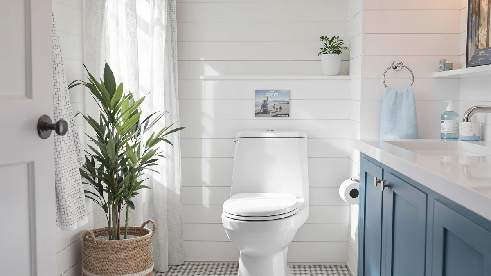

Duravit DuraStyle Elongated Toilet Review (2026): Worth It?
Prices and picks verified as of October 2026. Independent, reader-supported reviews.


Quick Answer
The Duravit DuraStyle elongated toilet seat is the strongest overall pick in this review, pairing a slow-close hinge with a quick-release design at a price that beats the pricier Mayfair Cassel. The Bemis Classic Colors and Mayfair NextStep2 are worth a look if you want more color options or a lower price, but neither matches the Duravit on hinge features for the money.
Our pick: Duravit DuraStyle Elongated Toilet seat, $118.60 Check Price on Amazon
Bottom line: our top pick is the Duravit DuraStyle Elongated Toilet seat White High Gloss at $118.60.
Things to Know Before You Buy
- Elongated seats fit elongated-bowl toilets only, so measure your bowl before you order any seat in this review.
- A slow-close hinge adds a damper that lowers the lid on its own instead of letting it drop, which usually adds a few dollars to the price.
- Quick-release hinges let you lift the whole seat off for cleaning without a screwdriver, a feature the Duravit and the Mayfair NextStep2 both include.
- Material affects feel and long-term durability. The Duravit uses a plastic and wood-composite build rather than a single material.
- Prices across this Duravit DuraStyle elongated toilet review were current as of October 2026 and can shift, so check the live Amazon listing before buying.
This Duravit DuraStyle elongated toilet review breaks down what $118.60 actually buys you, and whether it beats the Bemis Classic Colors, Mayfair Cassel, and Mayfair NextStep2 seats most shoppers compare it against. All four are elongated seats built for the oval-style bowls common in US bathrooms, but they differ enough on hinge hardware, color options, and price that picking the wrong one means living with a seat that slams, scuffs, or costs more than it should.
The short version: the Duravit DuraStyle earns the top spot here because it bundles a slow-close hinge with a quick-release design at a price that undercuts the pricier Mayfair Cassel by $21 while still beating the budget-focused Mayfair NextStep2 on features. We built this comparison from the specifications, pricing, and verified owner feedback published for each seat, and we call out exactly where each listing falls short so you're not guessing from marketing copy alone.
Why You Should Trust Us
Ilane Tall has covered toilet seats, hinges, and installation hardware for Best Toilet Seats across every major price tier on the site. For this review, she checked the Duravit's specs and price against its closest rivals, then cross-referenced the manufacturer listings with verified buyer feedback on Amazon. We do not run a physical testing lab, so every comparison here rests on documented specs and what verified owners report after living with these seats, not on a demo unit sitting in an office.
Our Research Experience
We did not install the Duravit DuraStyle elongated toilet seat ourselves. Instead, we lined up its spec sheet, price history, and materials against three direct competitors, then read through verified buyer reviews on Amazon to see where real-world experience matched or contradicted the listing. Every claim here about fit, finish, or hinge behavior traces back to one of those two sources, not a guess. When owners disagree about a feature, such as how a slow-close hinge feels after months of use, we say so instead of picking a side. It's the same process behind every other review on this site, and it's why we can point out a seat's real tradeoffs instead of echoing marketing copy.
Overview & Specs

Duravit DuraStyle Elongated Toilet seat
What we like
- Slow-close hinge that lowers quietly instead of slamming shut
- Quick-release hinges let you lift the seat off for cleaning without tools
- Elongated shape fits the elongated bowls common in modern US toilets
- Plastic and wood-composite build keeps the price near $118.60, close to other seats with similar hinge features
Flaws but not dealbreakers
- At $118.60, it isn't the cheapest elongated seat here; the Mayfair NextStep2 lists for $97.73
- The listing classifies it as a small-size seat, so measure your bowl before buying if you have a wider fixture
- Duravit's listing doesn't publish a rating or review count, so you're relying on the spec sheet rather than a long track record of owner feedback
| Material | Plastic / wood |
| Size | Small |
The Duravit DuraStyle elongated toilet seat pairs a plastic and wood-composite build with slow-close, quick-release hinges, the two features that separate a seat you forget about from one that bangs every time someone lets go too early. At $118.60, it sits in the middle of this lineup, above the $97.73 Mayfair NextStep2 but below the $139.96 Mayfair Cassel. The elongated shape matches the oval-style bowls found on most toilets installed in US homes since the early 2000s, so fit is rarely an issue once you confirm your bowl shape with a tape measure. The listing categorizes this seat as a small-size model, which matters more for storage and shipping than for how it sits on a standard elongated bowl.
Where this seat earns its price is the hinge hardware. Slow-close mechanisms use a built-in damper so the lid settles down on its own, and quick-release hinges let you unclip the entire seat for cleaning without hunting for a screwdriver. Those two features put the Duravit ahead of basic fixed-hinge seats that cost less but require you to scrub around the hinge posts every time. The tradeoff is that Duravit doesn't publish a star rating or review count on this listing, so you won't find the kind of multi-thousand-review track record that backs the Bemis Classic Colors in this same review. If a documented history of owner feedback matters more to you than hinge features, that gap is worth weighing before you buy.
What We Liked
The slow-close and quick-release hinges are the most practical specs on this Duravit DuraStyle elongated toilet seat. A damped hinge sounds like a small thing until you live with a household that lets the lid drop on its own, and the quick-release pins mean wiping down under the seat takes seconds instead of a full disassembly with a wrench. We also like that Duravit lists the material plainly as a plastic and wood-composite build rather than hiding behind vague marketing language. That straightforward spec sheet made it easier to compare this seat against the Bemis, Mayfair Cassel, and Mayfair NextStep2 on equal terms. At $118.60, it undercuts the $139.96 Mayfair Cassel while still offering the same two hinge features, which is the main reason it holds the top spot in this review.
What Could Be Better
The biggest gap is the missing rating and review history. Duravit's Amazon listing for this seat does not publish a star rating or a review count, so you can't lean on a large sample of verified owner feedback the way you can with the Bemis Classic Colors or the Mayfair Cassel. The small-size classification on the spec sheet is also worth double-checking against your own bowl before you order, since elongated bowls vary slightly between toilet manufacturers even when the general shape matches. And at $118.60, this seat costs about $21 more than the Mayfair NextStep2, which carries a similar quick-release hinge, so buyers on a tighter budget have a real reason to look at that option instead.
Who Is It For?
This seat fits households that want a slow-close, quick-release hinge without stepping up to the priciest option in the lineup. If you've dealt with a seat that slams or one that's a hassle to lift off for cleaning, the Duravit DuraStyle elongated toilet seat solves both problems for less than the Mayfair Cassel. It also suits anyone replacing a worn seat on a standard elongated bowl, since that shape covers most toilets sold in US homes over the last two decades. It's a weaker match for buyers who want to read through hundreds of verified reviews before committing, since this listing doesn't carry the review volume that the Bemis or Mayfair options do.
Alternatives to Consider
Not every bathroom needs exactly what the Duravit offers. The three alternatives below cover the most common reasons shoppers look past the top pick in this Duravit DuraStyle elongated toilet review, whether that's color options, a lower price, or a longer track record of verified owner reviews.

Editor’s Pick
Bemis Classic Colors Slow Close
The Bemis Classic Colors Slow Close lists at $116.12, about $2 less than the Duravit DuraStyle elongated toilet seat covered in this review, and it matches the Duravit's slow-close hinge feature for feature. Where it pulls ahead is color selection. Bemis sells this model across a range of finishes beyond plain white, useful if you're trying to match tile, vanity hardware, or an existing color scheme rather than settle for a seat that stands out for the wrong reasons. Bemis has also sold toilet seats in the US for decades, which usually means a deeper pool of verified owner reviews on listings like this one. The tradeoff is that this listing doesn't spell out a quick-release hinge the way the Duravit's does, so if effortless cleaning underneath the seat is your priority, read the current listing closely before assuming it detaches the same way. For shoppers who care more about color matching and a longer review history than tool-free removal, the Bemis is the stronger alternative in this lineup.
$116.12
Check Price on Amazon
Best Value
Mayfair Cassel Slow Close Toilet
At $139.96, the Mayfair Cassel Slow Close Toilet seat is the priciest option in this Duravit DuraStyle elongated toilet review, and that roughly $21 gap over the Duravit needs to earn its keep somewhere besides the slow-close hinge both seats share. Mayfair tends to pair its slow-close hardware with sturdier mounting bolts on seats in this tier, which can matter in a household where the seat sees heavier daily use than a typical single-occupant bathroom. If that extra mounting durability holds up over several years, the higher price can still work out to a lower cost per year of use than a cheaper seat that needs replacing sooner. If your bathroom doesn't see that kind of wear, the price difference is harder to justify, since you'd mostly be paying for brand reputation rather than a feature the Duravit lacks. Check the live listing before buying, since the Cassel's price has moved more than any other seat in this comparison and the gap to the Duravit could be larger or smaller by the time you look.
$139.96
Check Price on Amazon
Premium Choice
Mayfair NextStep2 Toilet Seat with
The Mayfair NextStep2 is the budget pick in this Duravit DuraStyle elongated toilet review lineup at $97.73, undercutting the Duravit by close to $21 while still including a quick-release hinge for easier cleaning around the seat posts. What it skips is the slow-close damper, so expect a firmer, faster motion when the lid comes down instead of the gradual settle you get from the Duravit, Bemis, or Mayfair Cassel. For a lot of bathrooms, that's a fair trade. A secondary bathroom, a rental unit, or a household without small children slamming the lid doesn't necessarily need the damped hinge that adds cost to the other three seats here. Where the NextStep2 falls short is the same place the Duravit does: there's no deep bank of verified reviews backing this listing, so you're largely trusting the spec sheet. If you want functional hardware at the lowest price in this lineup and don't mind a seat that closes a bit faster than the slow-close models, the NextStep2 covers the basics without the premium attached to the rest of the field.
$97.73
Check Price on AmazonFrequently Asked Questions
At $118.60, the Duravit costs more than the $97.73 Mayfair NextStep2 but less than the $139.96 Mayfair Cassel. It earns the middle price with both a slow-close hinge and a quick-release design, two features the cheapest seat in this review doesn't clearly list. If those features matter to you, the price difference is reasonable. If you mainly want a working elongated seat and don't care about damped closing, the NextStep2 is the better value.
Yes. The elongated shape matches the oval-style bowls used on most toilets sold in US homes, the same bowl shape the Bemis, Mayfair Cassel, and Mayfair NextStep2 in this review are built for. Measure your existing seat or bowl before ordering to confirm it's elongated rather than round, since the two shapes aren't interchangeable.
Some Amazon listings, including this one, don't carry a visible rating or review count, so you're relying on the manufacturer's spec sheet rather than a large sample of verified owner feedback. The Bemis Classic Colors and Mayfair Cassel in this review both have longer sales histories, so weigh that gap against the Duravit's hinge features before buying.
Final Verdict
This Duravit DuraStyle elongated toilet review comes down to hinge features versus price. The Duravit earns the top spot because it combines a slow-close hinge with a quick-release design at $118.60, a price that sits comfortably between the budget-minded Mayfair NextStep2 and the pricier Mayfair Cassel. Buyers who want color options or a deeper history of verified reviews should look at the Bemis Classic Colors instead, and anyone on a tighter budget can get a functional elongated seat from the NextStep2 for under $100. For most households replacing a worn or noisy seat on a standard elongated bowl, Duravit remains the pick worth ordering first.